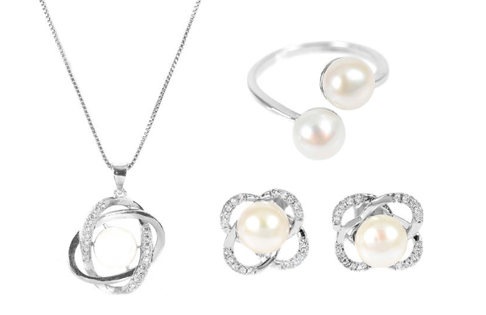
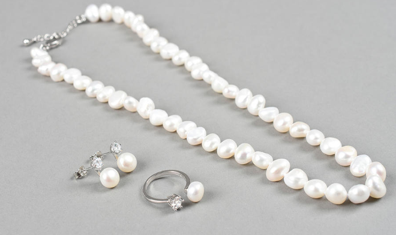
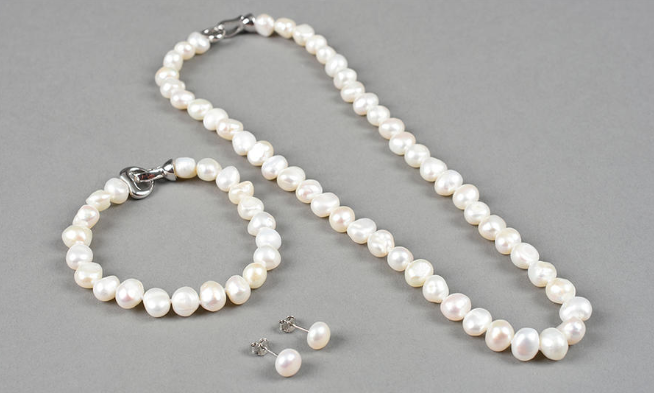

Joyas hechas con amor
|  |
Perla en Flor Debido a su proceso de creación, así como su color y forma, suelen asociarse con la lealtad, generosidad, pureza y elegancia. Hay quienes consideran que las perlas simbolizan también la experiencia adquirida a través de los años |
|  |
Perla Barroca Las perlas barrocas son, simplemente, perlas irregulares. Asimétricas. Son perlas sin una forma definida. Pueden tener cualquier forma, ya que son formadas naturalmente. |
|  |
Perla Barroca Rosa Las perlas cultivadas en granjas de aguas saladas o dulces tienen exactamente la misma estructura. La única diferencia reside en que el elemento que genera el crecimiento de la perla al interno de la ostra en un caso ha entrado por si solo y en el caso de las cultivadas es inserido por la mano del hombre. El proceso es el mismo y el material que las constituye el nácar es también el mismo. |